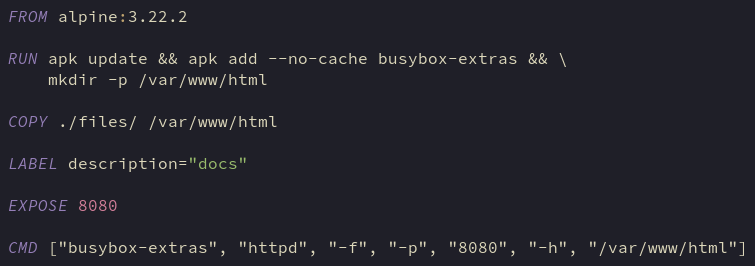

<h1>docs</h1>
<h2>dockerfile</h2>
<p></p>
<h3>RUN apk update &amp;&amp; apk add --no-cache busybox-extras &amp;&amp; mkdir -p /var/www/html</h3>
<ul>
<li>
<p>Install busybox-extras for httpd</p>
</li>
<li>
<p>Make directory for html files</p>
</li>
</ul>
<p>&nbsp;</p>
<h3>COPY ./files/ /var/www/html</h3>
<ul>
<li>Copy website html files to container</li>
</ul>
<p>&nbsp;</p>
<h3>EXPOSE 8080</h3>
<ul>
<li>Common port for internal non-encrypted http traffic</li>
</ul>
<p>&nbsp;</p>
<h3>CMD ["busybox-extras", "httpd", "-f", "-p", "8080", "-h", "/var/www/html"]</h3>
<ul>
<li>-f = do not daemonise</li>
<li>-p 8080 = communicate on port 8080</li>
<li>-h /var/www/html = set foor folder for html documents</li>
</ul>
<p>&nbsp;</p>
<p>&nbsp;</p>
<p>Return:&nbsp; <a title="Go to docs homepage" href="index.html">docs</a>&nbsp;&nbsp;<a title="Go to inception homepage" href="../index.html">home</a></p>
